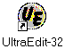

Все HTML-документы имеют расширение *.htm или *.html и записываются как обычный текст,
поэтому могут быть созданы
и отредактированы в любом текстовом редакторе, например, в Блокноте.
Но гораздо удобнее использовать специализированные HTML-редакторы.
Одним из них является UltraEdit.
Его ярлык выглядит так:

В этом редакторе все команды языка HTML отображаются синим цветом, а атрибуты команд — красным. Благодаря этому, если в названии команды (или атрибута) будет допущена ошибка, название отобразится черным цветом, как обычный текст.
Команды или теги (tag) языка HTML, как правило, имеют следующую структуру:
<название команды> - начало команды
поле действия команды
</название команды> - конец команды
|
Стандарт языка HTML требует обязательного присутствия тега "конец команды", кроме особо оговоренных случаев.
Команды могут иметь параметры, которые называются атрибутами. Атрибуты модифицируют исполнение команды, ставятся сразу после названия команды, внутри угловых скобок и имеют следующий формат:
АТРИБУТ="значение атрибута" |
Если значение атрибута состоит из одного слова, то ставить кавычки не обязательно. Если же значение атрибута содержит пробелы или небуквенные символы, то кавычки обязательны.
Если команда имеет несколько атрибутов, то они разделяются пробелами:
<название команды
АТРИБУТ1="значение атрибута1"
АТРИБУТ2="значение атрибута2">
|
Структура HTML-документа имеет следующий вид:
<HTML> - начало документа
<HEAD> - головная часть документа (может отсутствовать)
</HEAD> - конец головной части документа
<BODY>
- тело документа
</BODY>
</HTML> - конец документа
|
HTML-документы записываются в обычном текстовом формате и поэтому могут быть созданы и отредактированы в любом текстовом редакторе.
Замечание: Язык HTML не чувствителен к регистру. Команды языка могут набираться как прописными так и строчными буквами, т.е. команда <BODY> эквивалентна команде <body> или <Body>.
Если браузер не поддерживает команду, он ее просто игнорирует.
Комментарии задаются следующим образом:
<!-- - начало комментария
поле действия комментария
--> - конец комментария
|
Все то, что стоит внутри комментариев не будет выведено на экран.
Для каждого из этих элементов в HTML существуют команды, описывающие в каком виде пользователь увидит текст на экране. Пусть мы создали некоторый файл:
|
Этот текст выглядит так:
Глава 1Параграф 1.Добро пожаловать в HTML! Здесь мы расскажем, как надо и как не надо делать гипертексты. Параграф 2. |
В каждом HTML-документе должен быть задан заголовок окна браузера, он должен описывать цель документа и содержать не больше 5-6 слов. Кроме того, он используется и для идентификации документа (например, при поиске).
Для задания заголовка окна браузера служат команды:
| <TITLE>Заголовок</TITLE> |
расположенные строго внутри раздела <HEAD> и </HEAD>.
Язык HTML имеет шесть уровней заголовков, имеющих номера с 1 по 6 (заголовок первого уровня является заголовком самого большого размера). По сравнению с нормальным текстом, заголовки выделяются жирным шрифтом.
Синтаксис заголовков:
| <Hn align=> Текст заголовка </Hn> |
Команда задания абзаца < P> также имеет атрибут align=, который, кроме указанных выше значений может быть задан как
| <P align=justify> |
что устанавливает выравнивание правого края текста на экране.
В отличие от документов в большинстве текстовых процессоров, прерывания строк в HTML-файлах не существенны. Обрыв строки может происходить на любом пробеле в вашем исходном файле, при просмотре это прерывание будет проигнорировано. Напомним, что в нашем примере, первый абзац был представлен как
<H2>Параграф 1.</H2> <P>Добро пожаловать в HTML! Здесь мы расскажем, как надо и как не надо делать гипертексты. |
В исходном файле два предложения находятся на двух разных строках. Браузер игнорирует это перерывание строки и начинает новый абзац только, после команды <P>.
Однако, чтобы сохранить удобочитаемость в исходных HTML-файлах, рекомендуется заголовки размещать на отдельных строках, а абзацы отделять пустыми строками (в дополнение к команде <P>).
Используя команду <BR> можно перейти на новую строку, не начиная нового абзаца (в большинстве браузеров абзацы выделяются дополнительными пустыми строками).
Например:
Институт<BR>в котором мы учимся |
даст на экране:
Институт
в котором мы учимся
Для вывода на экран текста с небольшим сдвигом от левого края, например стихов, применяются команды <BLOCKQUOTE> и </BLOCKQUOTE>
Задание стилей для всех семейств шрифтов, используемых на компьютере, определятся явным заданием вида шрифта, которым будет выводится текст:
| Шрифт | команда |
| Равноширинный шрифт (teletype) | <TT> |
| Полужирный текст (bold) | <B> |
| Курсив (italic) | <I> |
|
<S> или <STRIKE> | |
| подчеркнутый текст (underline) | <U> |
Пример:
<P>Этот <B>текст</B> полужирный. Этот <I>текст</I> курсивный. |
Что даст:
Этот текст полужирный. Этот текст курсивный.
Допускается совместное использование команд задания стиля, например,
<P>Этот <I><B>текст</B></I> полужирный курсив. |
Что даст:
Этот текст полужирный курсив.
Однако не допускается перекрещивание стилей, например,
<P><B>Этот <I>текст</B> полужирный </I> курсив. |
данная запись считается неправильной, хотя некоторые браузеры покажут ее правильно.
Как уже было сказано, браузер игнорирует перерывание строки в HTML-файле, где на самом деле закончится одна строка на экране и начнется другая — зависит от размера шрифта на экране у клиента. Кроме того, браузер игнорирует и любое количество пробелов между словами — все пробелы заменяются одним. Поэтому, если требуется поставить подряд несколько пробелов, применяется специальный символьный примитив "неразрывный пробел", который начинается амперсандом (&) и заканчивается точкой с запятой: (сокращение от Non Break SPace).
Символьные примитивы чувствительны к регистру: НЕЛЬЗЯ использовать &Nbsp; вместо
Например, строка
Факультет на котором мы учимся |
будет выглядеть на экране так:
| Факультет на котором мы учимся |
Поскольку браузер обрывает строку на пробеле, то возможна ситуация, когда, например, инициалы останутся на одной строке, а фамилия "переедет" на другую. Чтобы этого не происходило, между инициалами и фамилией обязательно следует ставить "неразрывный пробел".
Символы <, >, & являются зарезервированными, так как применяются для записи команд. Если эти символы необходимо использовать в тексте, их также заменяют соответствующими символьными примитивами:
Кроме выведения на экран зарезервированных символов символьные примитивы служат для кодировки букв национальных алфавитов.
В тексте можно задать верхние и нижние индексы с помощью команд SUP and SUB.
Эти команды уменьшают размер текста, располагаемого вверху или внизу от строки. Например:
верхний индекс B<sup>a</sup> и нижний индекс B<sub>a</sub> |
имеет следующий вид:
верхний индекс Ba и нижний индекс Ba
Установка цветов в HTML документе производится с использованием атрибутов установки цвета в командах: BODY, FONT, HR, MARQUEE, TABLE.
Например, для установки цвета фона используется атрибут BGCOLOR= в команде BODY.
В следующем примере задан белый фон документа.
<BODY BGCOLOR=WHITE> <P>Эта страница имеет белый фон. </BODY> |
Выбор цвета можно производить двумя способами:
Язык HTML поддерживает следующие имена цветов:
| AQUA, BLACK, BLUE, FUCHSIA |
| GRAY, GREEN, LIME, MAROON |
| NAVY, OLIVE, PURPLE, RED |
| SILVER, TEAL, WHITE, YELLOW. |
Эти цвета выглядят следующим образом:
| AQUA | BLACK | BLUE | FUCHSIA |
| GRAY | GREEN | LIME | MAROON |
| NAVY | OLIVE | PURPLE | RED |
| SILVER | TEAL | WHITE | YELLOW |
В примере приведены таблица соответствия 16 имен цветов и их шестнадцатеричных номеров и расширенная таблица цветов.
Номер цвета Red-Green-Blue задается тремя двухзначными шестнадцатиричными числами. Каждое число из интервала [00 - FF] ([0 - 255]) определяет интенсивность соответствующего цвета.
Например номер цвета #FF0000 соответствует красному цвету (RED), так как имеет максимальную интенсивность для красного (Red), а зеленый (Green) и голубой (Blue) имеют значения равные нулю. Соответственно, номер #00FF00 соответствует зеленому цвету (GREEN) и номер #0000FF - голубому (синему) (BLUE). Знак (#) обозначает номер.
Если вы желаете выделить фоном часть вашей страницы, то для этого лучше всего использовать "пустую" таблицу (таблицу, состоящую из одной клетки)
Хотя задание Red-Green-Blue теоретически позволяет выводить "миллион" цветов, на самом деле все определяется видеокартой и монитором, которые использует пользователь-клиент.
Этот текст сверху от линии.
Ее длина может быть фиксированной или зависеть от размера окна браузера, например:
<HR ALIGN=center COLOR=green SIZE=5 WIDTH="60%"> |
это будет линия, расположенная по центру, зеленого цвета, шириной 5 пикселей и длиной 60% от ширины экрана.
При стандартном просмотре документа через броузер как правило используются два семейства графических шрифтов: это пропорциональный шрифт (обычно Times Roman) и равноширинный шрифт (обычно Courier). Броузеры могут использовать и другие шрифты, установленные в системе. Считается стандартным, использование в качестве дополнительного шрифта третьего семейства шрифтов, которое называется шрифт без надсечек (обычно Arial). Принципиально допускается использование любого семейства шрифтов, если вам известно его имя на пользовательской машине.
Команда FONT задает цвет, размер и вид семейства шрифтов.
Цвет шрифта
Определяется атрибутом
COLOR= согласно правилам
задания цветов в HTML-документе.
Размер шрифта
Определяется атрибутом
SIZE=n.
Размер может задаваться в абсолютным или относительным значением
от базового размера шрифта в документе.
Абсолютный размер
Число n при абсолютном задании размера может принимать значения
от 1 до 7.
Пример
size=1 size=2 size=3 size=4 size=5 size=6 size=7
Относительный размер
Число n при относительном задании размера может принимать значения
от 1 до 7 со знаками плюс (+) - увеличение или минус (-) - уменьшение
размера шрифта на n пунктов по отношению к
базовому размеру шрифта в документе.
По умолчанию базовый размер шрифта в документе считается равны 3 в абсолютных значения.
Пример
Относительное изменение размера шрифта при стандартном значении базового
размера шрифта в документе (n=3).
size=-4 size=-3 size=-2 size=-1 size=+1 size=+2 size=+3 size=+4
Пример
Относительное изменение размера шрифта при значении базового
размера шрифта в документе n=6.
Имя семейства шрифтов определяется атрибутом
FACE=
команды
FONT
или атрибутом NAME= команды
BASEFONT. (см. Базовое задание шрифта).
Стандартные значения этого атрибута:
"Times New Roman" (пропорциональный шрифт), "Courier New"
(равноширинный шрифт) и "Arial" (шрифт без надсечек).
Имена семейств шрифтов в настоящий момент пока не стандартизованы и
в разных системах могут называться по разному. Например, семейство
шрифтов, которое используется по умолчанию для пропорционального
шрифта "Times New Roman", может называться
"Times", "Times Roman",
"Roman" и т.д.
Пример
Установка шрифта "Arial":
<FONT FACE="Arial">Welcome to WWW!</FONT> |
Установка шрифта "Courier New":
<FONT FACE="Courier New">Welcome to WWW!</FONT> |
Семейство шрифтов "Arial" может отсутствовать на конкретной машине пользователя, поэтому для задания шрифта без надсечек рекомендуется использовать несколько подходящих для этих целей имен, например, "Arial", "Lucida Sans", или "Helvetica". Кстати, если просмотрщик не находит нужного шрифта, то использует, заданный по умолчанию пропорциональный шрифт, как правило, "Times Roman".
Пример
Установка шрифта "Arial":
<FONT FACE="Arial,Lucida Sans,Helvetica">Данный текст выводится либо шрифтом Arial, либо Lucida Sans, или Helvetica, или Times Roman, в зависимости от наличия шрифтов, установленных в системе.</FONT> |
Базовое задание шрифта
Команда
BASEFONT
определяет (или изменяет) базовый шрифт документа.
Атрибуты
<BASEFONT SIZE=3> This sets the base font size to 3. <FONT SIZE="+4"> Now the font size is 7. <FONT SIZE="-1"> Now the font size is 2. |
язык HTML имеет команды создания различных списков и перечислений: UL (Unodered List), OL (Odered List), MENU, DIR и DL (Definition List).
Элементы списка (item's) отмечаются командой LI (List Item). Допускаются вложенные списки любой глубины.
В качестве примера, задания ненумерованного списка (unodered list or bulleted list) и использования команд UL и LI, рассмотрим:
<UL> <LI>Ненумерованный список (Bulleted Lists) <LI>Нумерованный (упорядоченный) список (Ordered Lists) <LI>Список описаний (Directory Lists) <LI>Список обозначений (Itemized Lists) <LI>Список определений (Definition Lists) </UL> |
даст:
Для ненумерованного списка дополнительно может использоваться атрибут TYPE=:
TYPE=disc - темный кружок
TYPE=circle - светлый кружок
TYPE=square - темный квадратик
Используя OL и LI получим нумерованный список:
<OL> <LI>Шаг первый. <LI>Шаг второй. <LI>Шаг третий. </OL> |
который даст:
По умолчанию нумерация дается арабскими цифрами, начиная с единицы.
Используя атрибуты команды OL можно изменить стиль оформления списка. Атрибут TYPE= определяет стиль нумерации (буквы или цифры):
TYPE=order-type
order-type=A - использовать большие буквы (латинские);Атрибут START= определяет начальное значение списка (десятичное число)
order-type=a - использовать маленькие буквы;
order-type=I - использовать большие римские цифры;
order-type=i - использовать маленькие римские цифры;
order-type=1 - использовать арабские цифры;
Рассмотрим следующий вложенный список:
<OL> <LI>Шаг первый. <UL> <LI>Второй список раз <UL> <LI>Третий список раз <LI>Третий список два <LI>Третий список три </UL> <LI>Второй список два <OL TYPE=i START=3> <LI>Третий список римский раз <LI>Третий список римский два <LI>Третий список римский три </OL> <LI>Второй список три </UL> <LI>Шаг второй. <LI>Шаг третий. </OL> |
что даст:
Список определений задается командами
DL,
DT и
DD.
Следующий пример показывает использование списка определений:
<DL> <DT>Кошка <DD>Маленькое хищное животное. <DT>Крокодил <DD>Большая рептилия. </DL> |
Что даст:
Связь между документами и отдельными частями документов осуществляется через соответствующие гиперссылки. Команда <A> (anchor - якорь) задает гиперссылку на другой документ или на определенное место в документе. Когда браузер выводит на экран текст, содержащийся между тегами <A> и </A>, он обычно выделяет его другим цветом. Если же гиперссылкой является графический файл, то на экране вокруг картинки может быть изображена цветная рамка (если атрибут border не равен 0).
Атрибуты команды BODY позволяют определить цвет, которым обозначаются непосещенные (LINK), непосещенные (VLINK) и активные (ALINK) гиперссылки в документе.
Пример использования атрибутов:
<BODY BACKGROUND="bgpicture.gif" BGCOLOR="white"
TEXT="gray" LINK="blue" VLINK="yellow" ALINK="red">
|
Здесь
BACKGROUND - название файла, используемого в качестве фонового рисунка
BGCOLOR - цвет фона (белый)
TEXT - цвет текста (серый)
LINK - цвет непосещенной гиперссылки (синий)
VLINK - цвет посещенной гиперссылки (желтый)
ALINK - цвет активной гиперссылки (красный)
Примеры
| <A HREF="http://www.company.com">Это адрес компании.</A> |
| <A HREF="home.html">На главную страницу</A> |
| <A NAME="info">Информация</A> |
| Посмотрите в разделе <A HREF="#info">Информация</A> |
| <A HREF="mailto:www@ict.nsc.ru">www@ict.nsc.ru</a> |
http://www.ict.nsc.ru/win/docs/html/url.html |
HTTP - HyperText Transport Protocol (протокол передачи гипертекста). HTTP-сервера обычно используются для предоставления гипертекстовых документов. Такие документы, в отличие от обычных, имеют ссылки на другие документы (не обязательно расположенных на этом же сервере) и состоят из текста, графики, звуков, анимации.
Для вызова документа "url.html", который находится в директории /win/docs/html/ WWW сервера www.ict.nsc.ru необходим следующий URL адрес:
http://www.ict.nsc.ru/win/docs/html/url.html |
По умолчанию все программы по протоколу HTTP ищут WWW сервер на 80 порту, но можно и явно указать порт (также как и в gopher'e).
http://www.weblab.com:1234/pub/files/foobar.html |
<A HREF="http://www.w3c.net/WWW/url.html">URL</A>
<A HREF="docs.html">Документация</A> |
Первый пример - это полный URL, а второй - частичный. Частичный URL указывает на документ, который находится на том же сервере и в той же директории, где и документ, в котором встречается эта ссылка. Так, например, если документ, где вы нашли эти две строчки, имел URL http://www.w3c.net/WWW/foo.html, то полный URL у второго частичного должен выглядеть как http://www.w3c.net/WWW/docs.html.
Сокращенные URL адреса определяются по правилам, принятым в операционной системе UNIX:
адрес "my/file-1.html" означает переход в поддиректорию
my относительно директории того файла, в котором стоит гиперссылка
на файл
адрес "../win/file-2.html" означает переход на
одну директорию вверх и выбор файла с именем
адрес "/docs/ball.gif" - это переход в корневую директорию и выбор файла с полным именем www.w3c.net/docs/ball.gif.